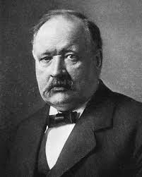

SVANTE ARRHENIUS

Introduction
Svante Arrhenius was Swedish scientist. He was a physicist and a chemist. He was awarded the Nobel prize for Chemistry in 1903. He proposed the Arrhenius equation, which signifies the temperature dependence of reaction rates. He was also one of the first chemists who proposed that, in a solution the salt dissociates into ions even in the absence of an electric current.
About Arrrhenius
Svante August Arrhenius , a founding father of physical chemistry, was trained in both chemistry and physics. He began at the University of Uppsala, but then petitioned to work at the Royal Swedish Academy of Sciences in Stockholm instead, because he found the chemistry professors at the university rigid and uninspiring. His doctoral dissertation, presented in 1883, described his experimental work on the electrical conductivity of dilute solutions; it also contained a speculative section that set out an early form of his theory that molecules of acids, bases, and salts dissociate into ions when these substances are dissolved in water—in contrast to the notion of Michael Faraday and others that ions are produced only when the electrical current begins to flow. According to Arrhenius, acids were substances that contained hydrogen and yielded hydrogen ions in aqueous solution; bases contained the OH group and yielded hydroxide ions in aqueous solution.
Although he was offered opportunities to move to other European universities, and he delivered important lecture series at universities in the United States, Arrhenius always returned to Stockholm. In 1903 he received the Nobel Prize in chemistry, and in 1905 he was made director of the newly created Nobel Institute for Physical Chemistry.
Arrhenius's Work
Arrhenius's thesis was received coolly by the university authorities and nearly ruined his prospects for an academic career. At the time his theory seemed incredible to many because, among other reasons, a solution of sodium chloride shows none of the characteristics of either sodium or chlorine. In addition, the professors he had shunned in his studies were not well disposed toward him. But he had the foresight to send copies of his thesis to several international chemists, and a few were impressed with his work, including the young chemists Wilhelm Ostwald and Jacobus Henricus van't Hoff, who were also to become founding fathers of physical chemistry. Ostwald offered Arrhenius a position in Riga, Latvia, which Arrhenius could not then accept because of his father's illness. He was instead given a post in Sweden and later a travel grant from the Swedish Academy that enabled him to work with Ostwald and van't Hoff. He subsequently developed his electrolytic dissociation theory further in quantitative terms and wrote texts promoting physical chemistry.
Arrhenius also applied physicochemical principles to the study of meteorology, cosmology, and biochemistry. In meteorology he anticipated late-20th-century speculation on the "greenhouse" effect of carbon dioxide in the atmosphere.
References
http://www.chemheritage.org/discover/online-resources/chemistry-in-history/themes/electrochemistry/arrhenius.aspx